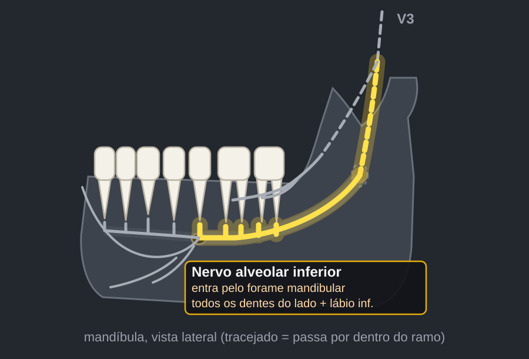

Resumo completo de Farmaco
Prof. Gustavo Holderbaum · AV quinta 26/11 · feito com as aulas, o SM1 e o SM2. Amostra: capítulo de anestésicos locais.
1O que é anestesia local
É a interrupção reversível da condução do impulso nervoso numa região, sem perda de consciência. Age nos nervos periféricos.
Como funciona: o anestésico bloqueia os canais de sódio voltagem-dependentes. Sem sódio entrando, o nervo não despolariza e a dor não chega ao cérebro.
2A molécula do anestésico
| Parte | O que faz |
|---|---|
| Grupo aromático | Lipofílico: atravessa a membrana do nervo |
| Cadeia intermediária | Define se é éster ou amida |
| Amina terminal | Hidrofílica: dá solubilidade em água |
Éster x amida
| Tipo | Exemplos | O que lembrar |
|---|---|---|
| Éster | Procaína (e a cocaína, histórica) | Mais alergênico, pouco usado |
| Amida | Lidocaína, articaína, mepivacaína, prilocaína, bupivacaína | As mais usadas |
Por que falha no abscesso
O anestésico é uma base fraca. No pH ácido da inflamação sobra mais forma ionizada, que não atravessa a membrana. Resultado: o dente infeccionado não anestesia direito.
3Cada anestésico e o que cai
| Anestésico | Marca registrada |
|---|---|
| Lidocaína 2% | A referência. 36 mg por tubete |
| Articaína 4% | Amida com tiofeno. 72 mg por tubete |
| Prilocaína | Dose alta = metemoglobinemia (orto-toluidina) |
| Bupivacaína | Longa duração: cirurgia longa e dor pós-operatória |
| Procaína | Éster, mais alergênico |
4Dose máxima: a conta que sempre cai
Tubete = 1,8 mL. mg/mL x 1,8 = mg por tubete. Dose máxima = peso x mg/kg. Arredonda sempre pra baixo.
| Limite | Conta | Resultado |
|---|---|---|
| Lidocaína 2%, adulto de 60 kg | 60 x 4,4 = 264 mg ÷ 36 | 7 tubetes |
| Epinefrina 1:100.000, saudável | 0,2 mg ÷ 0,018 | 11 tubetes |
| Epinefrina 1:100.000, cardiopata | 0,04 mg ÷ 0,018 | 2 tubetes |
| Articaína 4%, criança de 20 kg | 20 x 7 = 140 mg ÷ 72 | 1,9 tubete |
5Onde cada técnica pega


6Verdadeiro ou falso de revisão
| A articaína é um anestésico do tipo éster. | Falso |
| O vasoconstritor acelera o metabolismo hepático do anestésico. | Falso |
| O anestésico bloqueia canais de sódio voltagem-dependentes. | Verdadeiro |
| A felipressina controla melhor o sangramento que a epinefrina. | Falso |
| Diabético controlado pode receber anestésico com epinefrina. | Verdadeiro |
7Pra decorar
Amostra para aprovação. Feito pela Mônica com o conteúdo das aulas do prof. Gustavo e dos simulados oficiais.